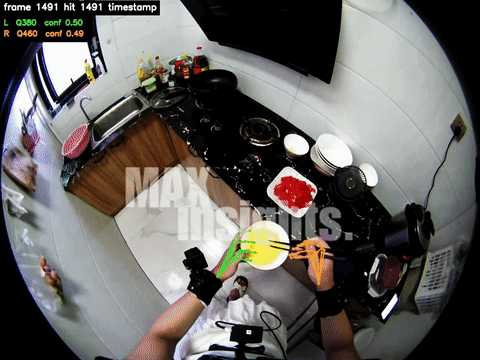
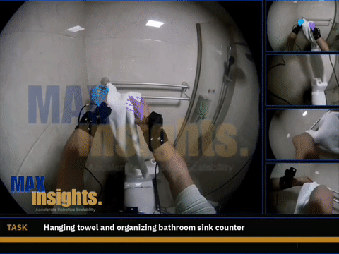
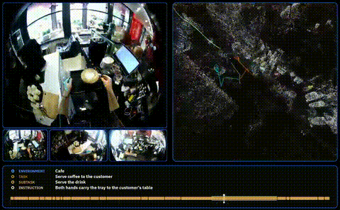
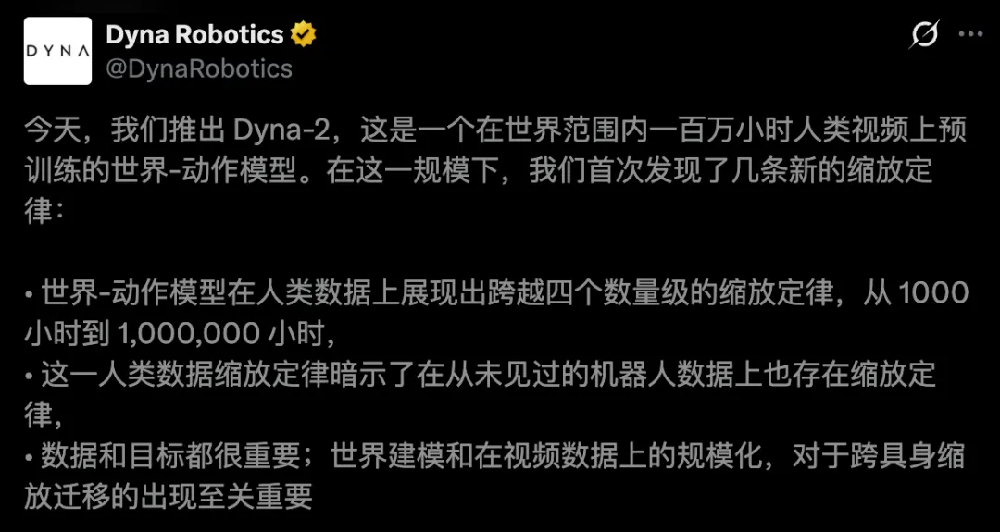
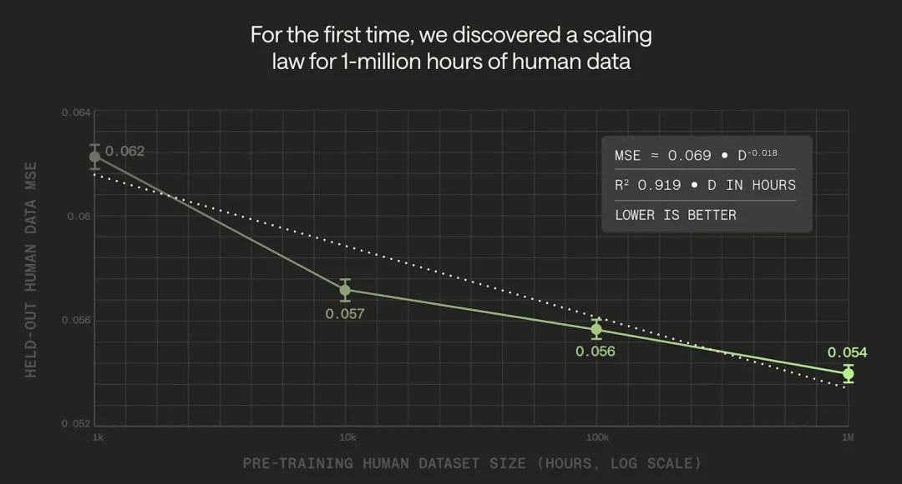
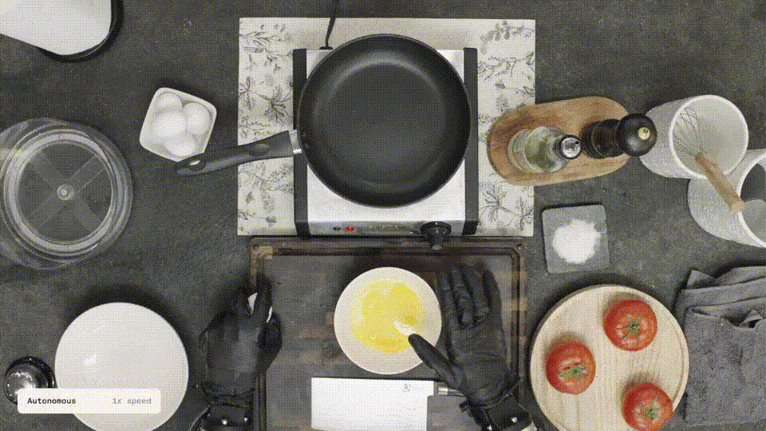
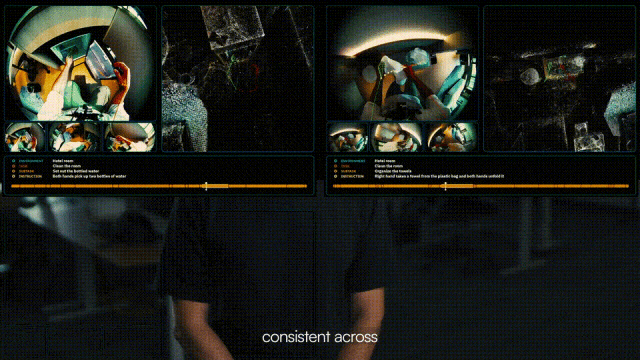
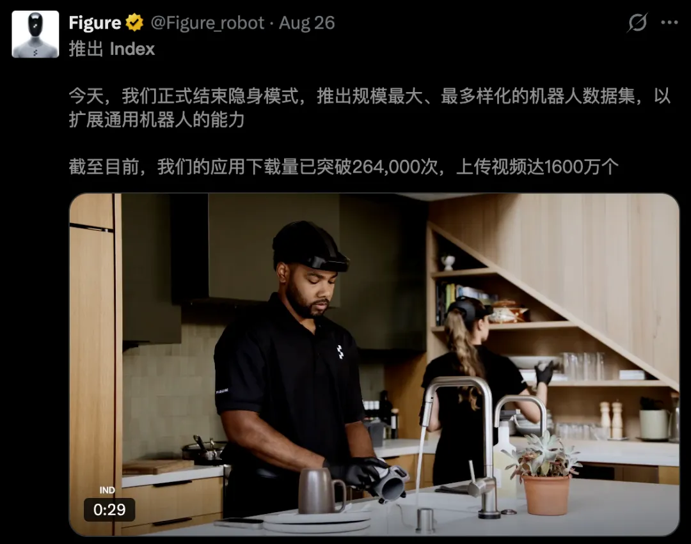
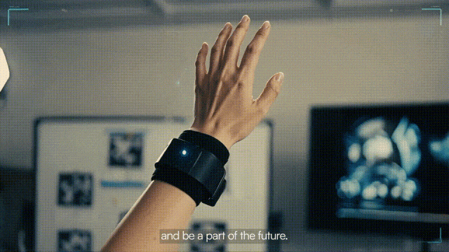

新智元报道
新智元报道

藏不住了，这次是彻底藏不住了！
Google DeepMind、Figure、1X、Genesis AI、Dyna Robotics……
硅谷这一轮最火的机器人玩家，背后竟站着同一家数据「供血商」。
Dyna-2跑出100万小时的Scaling Law，背后有它。
GENE-26.5一口气完成一顿20步的饭，用到的第一人称数据，也来自这里。
能拿下这些头部客户，光会「数据采集」显然不够。
这家神秘公司手里，还有另一张更硬核的王牌——强大的数据处理与算法能力。
那些行业中最难啃的corner cases，手被挡住、戴着透明手套、动作快到发虚的画面，到了他们的手里，依然能一帧一帧重新提取成模型可学的材料。
也正因为采集、处理、算法、交付整条链路全部打通，它才能沉淀出150万小时高质量数据存量，并在全球累计完成200万小时级别的数据交付。

快速移动+多手入镜，依旧可以稳定识别
能做到这个量级，基本上已经算是头部机器人公司背后的数据基础设施了。
如今，这家神秘公司终于揭晓了——它，就是Maxinsights！
一家扎根硅谷的Physical AI团队，头部客户几乎都在美国，今年3月才悄悄回到国内开展业务。
它要做的，是把真实世界的人类经验，规模化变成Physical AI的训练燃料。

那么问题来了，一家做数据的公司，为什么要训自己的模型？又为什么要把模型做到如此高精？
答案，要从Physical AI走进现实世界的那道门槛说起。
让Physical AI解释怎么叠衣服，和让它真的把衣服叠好，中间隔着大量细节。
手应该抓在哪里？衣角被压住了怎么办？布料滑动之后，下一步动作该怎么调整？
这些经验，很少被完整写进文字。人类却每天都在使用它们。
大语言模型能跑通Scaling Law，是因为互联网早就替它攒好了文本；视觉模型也继承了几十亿张现成的图片。
机器人从来没有这样的条件。互联网上有几十亿小时的视频，却几乎没有一段是从「手的视角」记录人怎么干活的。
而第一人称数据，也叫Egocentric Data或Ego数据，提供了一种记录方式——
从操作者的视角，拍下双手如何与物体交互，以及动作发生前后，环境出现了什么变化。
它让学习材料，更贴近任务本身。
过去教机器人干活，主流做法是遥操作。也就是，一个人戴着设备远程控制机器人抓杯子、叠毛巾，机器人把每一次动作记下来。
这种数据质量高，但贵、慢，一台机器人一天也就产出几小时，而且数据和特定的机器人本体绑死，换一台机器就得重采。
第一人称数据的价值，就在这里。
采集设备跟随操作者，记录他看到的场景，以及双手与物体的交互过程。
人在厨房、工作台和生活空间里积累的操作经验，由此有了进入训练系统的机会。
然而，拍下来，只是第一步。

以人类在厨房拧瓶盖的视频举例，人看一眼，就知道发生了什么。
进入训练流程后，却需要进一步拆解——
哪只手握住瓶身，哪只手开始旋转，动作从哪一帧开始、在哪一帧结束，手腕在空间中如何移动。
如果两只手交叉，手指被瓶身挡住，或者动作太快带来模糊，判断就会变难。
一句「正在拧瓶盖」的标签，解释不了这些细节。
机器人要的是带着结构的数据，而非一段影像。
Maxinsights的算法到底强在哪里？团队介绍的一段演示，把三层能力放到了同一条数据里。
先来看人，手被挡住了，动作还能不能追得上？
人在真实环境中干活，上半身一直在动，双手还会交叉、被物体遮挡。追踪系统要从不断变化的画面里，尽可能准确地还原身体与手部姿态。
但视频的演示中，即便在这样的情况下，算法追踪仍能保持较高准确性。
这背后，自研MaxEgo所承担的手部与姿态信息提取，正是这套处理能力的重要组成部分。

遮挡的手部追踪依然稳定
难就难在，真实操作不会为了方便算法，始终把双手摆在镜头前。
抓取时手指被物体挡住，转身时视角发生变化，这些片段都包含有价值的动作信息。追踪越可靠，后续训练就越有机会保留这些细节。
再来看空间，人出门走了一圈，系统还能不能对回原点？
这里考验的是SLAM，也就是一边确定自身位置，一边建立周围环境的地图。
拍摄者不断移动时，定位误差可能逐渐累积。人明明回到了出发点，系统记录的轨迹却未必能对得上。

这段演示里，从出门到绕一圈回来，轨迹能够较好地闭合，与起点重新对齐。
由此一来，这让手部动作有了更完整的空间背景——
手怎样运动、人在什么位置，以及周围环境的几何关系，可以被放在一起理解。
这背后全靠团队打底的硬功夫。
Maxinsights的核心工程班底集结了Waymo、谷歌、Meta、QCraft等等顶尖企业，以及斯坦福、伯克利前沿实验室的资深人才，大多深耕自动驾驶多年。
作为一个由海量数据驱动的行业，团队早已具备了管理与迭代百万级车端数据的成熟实战经验。
如今转向机器人，底层的工程方法与数据链路依旧纯熟。
最后再来看动作，轨迹追到了，还要讲清楚人在做什么。
在演示中，语言标注由自研视频理解与标注模型生成，能够较准确地对应实际操作。
在Maxinsights的数据体系里，这些信息会按照环境、任务、子任务、动作指令分层组织。
比如，一段酒店房间里的操作，可以拆成：
酒店房间 → 打扫房间 → 摆放水壶 → 双手把水壶放到桌上。
这就把运动轨迹与任务含义联系起来：模型既能获得身体和双手如何运动的信息，也能知道这些动作是在完成什么目标。
身体怎么动、在空间里怎么走、正在做什么，三层信息合在一起，一段日常视频才有了更完整的学习价值。
数据处理得越深入，原始画面中可供模型学习的信息就越丰富。
根据内部版本的评测，从MaxEgo 0.5到1.0，相关难例上的关键误差指标下降超过一半。
支撑算法迭代的，是20亿余帧人体姿态数据，以及人工校正和高精度参考数据构成的验证体系。
这也解释了，为什么数据积累和算法能力会相互促进。
在姿态追踪、空间定位与动作理解之外，还有更深的物理信息可挖。
按Maxinsights的排序，往上还有身体与环境几何、物体位姿，以及最难测、也最值钱的接触信息。
因此，在Maxinsights的流程里，采集之后还连接着质量检查、格式统一、视频理解、空间处理、姿态追踪和人工校正，交付前再进行检查与格式转换。
两个模型加上四阶段自动化QA，把98%的质检覆盖交给机器完成，人只处理机器拿不准的那部分。
而人纠正过的样本，又回流成下一版模型的训练数据。
这是一个越做越顺的飞轮：交付得越多，模型越准，标注越便宜。
技术之外，Maxinsights更难复制的是另一件事——
怎么让全球5000+名采集员，持续、不重样地拍出真实生活。
Maxinsights在多个国家铺了直管的现场团队加社区网络，覆盖2000+采集环境、50000+场景，月采集产能45万小时。
运营靠一个Agent平台调度：
它会盯着数据分布，发现「餐厅后厨够多了、修车间不够」，就把设备和人往缺口调；
它会识别无效片段、摆拍片段、佩戴偏移；
它还会让场景每两周轮换一次，避免同一个厨房被拍到模型厌倦。
采集员是谁？
很多是家庭主妇，餐馆厨师，车间工人，农场采摘不同水果的农民，维修各种汽车的工程师，照顾老人的陪护等等......
一位主妇几十年切菜、择菜、拧瓶盖的手感，过去只存在于她自己的肌肉记忆里。
现在，她戴着相机做一顿饭，这些动作被拆成手部轨迹、动作时序和语义标签，成了机器人学做家务的第一课。
这大概是普通人第一次，能把「手艺」直接卖给Physical AI。
对模型公司来说，这也是最不可替代的一部分——
真实生活里的凌乱、失误和临场调整，实验室里怎么演都演不出来。
今年夏天最火的两个机器人，便是由Maxinsights的数据「喂」大的。
8月10日，Dyna Robotics发布Dyna-2，拿100万小时人类第一人称视频做预训练。
这相当于一个人睁着眼睛过了170年。
从1000小时到100万小时，模型性能跨越四个数量级持续单调提升，暂时看不到天花板。而且用更多人类数据预训练的模型，在从未见过的机器人数据上表现同样更好。


这100万小时，最大的供应商就是Maxinsights。
再往前5月，Genesis AI发布GENE-26.5，机器人两只手做完一顿20步的饭：切菜、打蛋、倒果昔，中间不用人接手。
GENE-26.5的第一人称数据合作伙伴，还是Maxinsights。

Genesis把第一人称视频和带传感器的手套数据叠在一起用，结果是许多高难度技能只靠不到一小时的机器人专属数据，就能达到自主执行。
硅谷这一轮出圈的两个具身智能模型，背后都有这家美国公司的数据支持。
对Maxinsights而言，美国头部客户一直是业务重心。从样本评估到大批量交付，它积累的，是与当地前沿团队持续配合、跟着训练需求一起扩量的经验。
Maxinsights的「家底」同样硬核——
2024年起步，从机器人遥操作数据采集切入，跟着湾区头部基础模型和机器人团队一路做到今天。累计交付超200万小时第一人称数据，仓库里压着150万小时以上带手部追踪和语言标注。
每月采集能力45万小时，Dyna-2那100万小时的训练量，两个多月就能采一遍。
好像大家满世界寻找的海量精品 EGO 数据，绕了一圈才发现——原来就在Maxinsights手里。

Dyna-2证明了一件事，机器人领域的Scaling Law存在，而且到100万小时还没看到天花板。
游戏规则从此变了。
具身智能的下半场竞争会变得很朴素：谁能持续、稳定、便宜地把真实世界喂进模型，谁就跑得快。
去年，特斯拉让Optimus团队的采集员戴上头盔、背上背包，五个摄像头对着自己的手，一遍遍叠衬衫。
8月下旬，Figure上线了众包平台Index，普通人打开App自己开抽屉、叠衣服就能拿钱。

之所以连特斯拉和Figure都要自己下场拍，是因为这个世界从来没有为机器人准备过一份「人类动作的互联网」。
Physical AI的互联网，得从零开始制造。
而Maxinsights，是目前少数几家在真正动手建造它的公司之一。
「制造」这个词，并不夸张。人需要真正执行任务，传感器需要持续采集，采完之后数据还要经过同步、验证、标注和质检，最后才变成训练系统能直接消费的形式。
Maxinsights把这件事概括成一句话：Physical AI的Scaling Law，同时也是一条Manufacturing Law。

整条管线是一串关口，良率是乘出来的。四道关口各95%，端到端只剩81%；各提到99%，就是96%。到1000万小时的规模，这15个点决定的是顺利交付还是大规模返工。
这也是Maxinsights把硬件、模型、真值体系、全球运营和交付管线放在一起的原因。它的定位是，成为Physical AI的数据与学习基础设施。
交付之外，Maxinsights还看到了下一道考题。
过了100万小时，规模依然重要，但更重要的是每新增一个小时，有没有为模型带来新的物理经验。
他把这叫Experience Density：同样一小时，固定桌面上反复抓取放置，和双手协同、物体状态不断变化、带工具使用的一小时，学习价值天差地别。在1万小时的规模上这只是噪声，到1000万小时，它就是预算本身。
数据规模上去之后，第1000万个小时和已有数据的相似度，会远高于当年第1万个小时。不主动设计，规模就只是重复。
这也是Maxinsights那个Agent平台盯着数据分布往缺口调人的原因。
所以这套体系最终要回答的问题有两个：客户扩大训练需求时，数据能不能跟上；跟上的每一小时，是不是模型没见过的世界。
150万小时，对Maxinsights来说是一个起点。
第一个100万小时，回答的是Scale是否有效。接下来的1000万小时，要回答的是一个小时究竟值多少。
拍下世界只是起点，把它持续变成模型学得会的材料，才是这场工程赛跑的硬功夫。
编辑：桃子 摩西